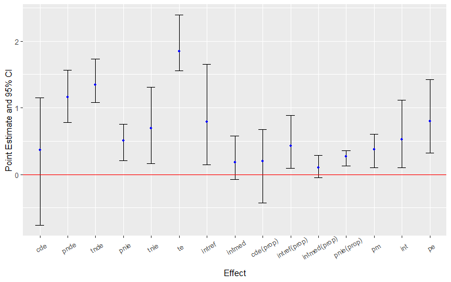
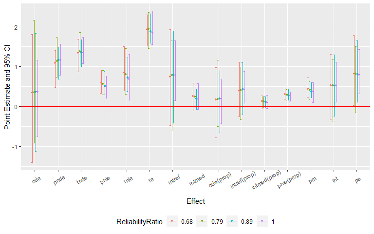
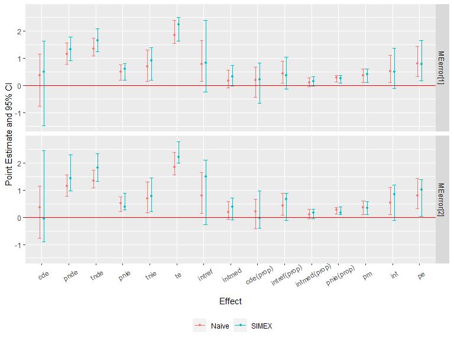

About the Package
The R package CMAverse provides a suite of functions for reproducible causal mediation analysis including cmdag for DAG visualization, cmest for statistical modeling and cmsens for sensitivity analysis.
Statistical Modeling
cmest implements six causal mediation analysis approaches including the regression-based approach by Valeri et al. (2013) and VanderWeele et al. (2014), the weighting-based approach by VanderWeele et al. (2014), the inverse odd-ratio weighting approach by Tchetgen Tchetgen (2013), the natural effect model by Vansteelandt et al. (2012), the marginal structural model by VanderWeele et al. (2017), and the g-formula approach by Lin et al. (2017).
| rb | wb | iorw | ne | msm | gformula1 | |
|---|---|---|---|---|---|---|
| Continuous Y2 | √ | √ | √ | √ | √ | √ |
| Binary Y | √ | √ | √ | √ | √ | √ |
| Count Y | √ | √ | √ | √ | √ | √ |
| Nominal Y | √ | √ | √ | × | √ | √ |
| Ordinal Y | √ | √ | √ | × | √ | √ |
| Survival Y | √ | √ | √ | × | √ | √ |
| Continuous M | √ | √ | √ | √ | × | √ |
| Binary M | √ | √ | √ | √ | √ | √ |
| Nominal M | √ | √ | √ | √ | √ | √ |
| Ordinal M | √ | √ | √ | √ | √ | √ |
| Count M | √ | √ | √ | √ | × | √ |
| M of Any Type | × | √ | √ | √ | × | × |
| Continuous A | √ | ×3 | × | √ | ×4 | √ |
| Binary A | √ | √ | √ | √ | √ | √ |
| Nominal A | √ | √ | √ | √ | √ | √ |
| Ordinal A | √ | √ | √ | √ | √ | √ |
| Count A | √ | ×5 | × | √ | ×6 | √ |
| Multiple Mediators | √ | √ | √ | √ | √ | √ |
| Post-exposure Confounding | × | × | × | × | √ | √ |
| 2-way Decomposition | √ | √ | √ | √ | √ | √ |
| 4-way Decomposition | √ | √ | × | √ | √ | √ |
| Estimation: Closed-form Parameter Function | √7 | × | × | × | × | × |
| Estimation: Direct Counterfactual Imputation | √ | √ | √ | √ | √ | √ |
| Inference: Delta Method | √8 | × | × | × | × | × |
| Inference: Bootstrapping | √ | √ | √ | √ | √ | √ |
| Marginal Effects | √9 | √ | √ | √ | √ | √ |
| Effects Conditional On C | √10 | × | × | × | × | × |
-
rb: the regression-based approach; wb: the weighting-based approach; iorw: the inverse odds ratio weighting approach; ne: the natural effect model; msm: the marginal structural model; gformula: the g-formula approach.↩︎
-
Y denotes the outcome, A denotes the exposure, M denotes the mediator(s) and C denotes the pre-exposure confounder(s).↩︎
-
continuous A is not supported when C is not empty; otherwise, it is supported.↩︎
-
continuous A is not supported when C is not empty; otherwise, it is supported.↩︎
-
count A is not supported when C is not empty; otherwise, it is supported.↩︎
-
count A is not supported when C is not empty; otherwise, it is supported.↩︎
-
closed-form parameter function estimation only supports the regression-based approach and a single mediator.↩︎
-
delta method inference is available only when closed-form parameter function estimation is used.↩︎
-
marginal effects are estimated when direct counterfactual imputation estimation is used.↩︎
-
conditional effects are estimated when closed-form parameter function estimation is used.↩︎
Multiple Imputation
cmest provides options to perform multiple imputation for a dataset with missing values via the mice package, estimate the causal effects with each of the imputed datasets and pool the results together.
Sensitivity Analysis
cmsens conducts sensitivity analysis for unmeasured confounding via the E-value approach by VanderWeele et al. (2017) and Smith et al. (2019), and sensitivity analysis for measurement error via regression calibration by Carroll et al. (1995) and SIMEX by Cook et al. (1994) and Küchenhoff et al. (2006). The sensitivity analysis for measurement error is currently available for the regression-based approach and the g-formula approach.
Quickstart Guide
We illustrate the general workflow of the CMAverse package by a quick example. Firstly, let’s simulate some data and plot the DAG of the scientific setting. The simulated dataset contains a binary exposure, a binary mediator, a continuous mediator, a continuous outcome and two pre-exposure confounders.
n <- 100
C1 <- rnorm(n, mean = 1, sd = 1)
C2 <- rbinom(n, 1, 0.6)
C2[which(C2 == 0)] <- "C2_0"
C2[which(C2 == 1)] <- "C2_1"
pa <- exp(0.2 - 0.5*C1 + 0.1*(C2 == "C2_1"))/(1 + exp(0.2 - 0.5*C1 + 0.1*(C2 == "C2_1")))
A <- rbinom(n, 1, pa)
A[which(A == 0)] <- "control"
A[which(A == 1)] <- "treat"
pm <- exp(1 + 0.5*(A == "treat") - 1.5*C1 + 0.5*(C2 == "C2_1"))/
(1 + exp(1 + 0.5*(A == "treat") - 1.5*C1 + 0.5*(C2 == "C2_1")))
M1 <- rbinom(n, 1, pm)
M2 <- rnorm(n, 2 + 0.8*(A == "treat") - M1 + 0.5*C1 + 2*(C2 == "C2_1"), 1)
Y <- rnorm(n, mean = 0.5 + 0.4*(A == "treat") + 0.5*M1 + 0.6*M2 + 0.3*(A == "treat")*M1 +
0.2*(A == "treat")*M2 - 0.3*C1 + 2*(C2=="C2_1"), sd = 1)
data <- data.frame(A, M1, M2, Y, C1, C2)The DAG can be plotted using the cmdag function.
cmdag(outcome = "Y", exposure = "A", mediator = c("M1", "M2"),
basec = c("C1", "C2", "C3"), postc = NULL,
node = FALSE, text_col = "black")
Then, we estimate the causal effects using the cmest function. We use the regression-based approach for illustration. The reference values for the exposure are set to be 0 and 1. The reference values for the two mediators are set to be 0.
est <- cmest(data = data, model = "rb", outcome = "Y", exposure = "A",
mediator = c("M1", "M2"), basec = c("C1", "C2"), EMint = TRUE,
mreg = list("logistic", "linear"), yreg = "linear",
astar = 0, a = 1, mval = list(0, 0),
estimation = "imputation", inference = "bootstrap", nboot = 20)Summarizing and plotting the results:
summary(est)
## # Outcome Regression:
##
## Call:
## glm(formula = Y ~ A + M1 + M2 + A * M1 + A * M2 + C1 + C2, family = gaussian(),
## data = getCall(x$regsumm$yreg)$data, weights = getCall(x$regsumm$yreg)$weights)
##
## Deviance Residuals:
## Min 1Q Median 3Q Max
## -1.97586 -0.75260 -0.00092 0.68488 2.13898
##
## Coefficients:
## Estimate Std. Error t value Pr(>|t|)
## (Intercept) 1.1070 0.4552 2.432 0.0170 *
## Atreat -0.5102 0.6515 -0.783 0.4356
## M1 0.1619 0.3690 0.439 0.6619
## M2 0.5715 0.1368 4.179 6.67e-05 ***
## C1 -0.3074 0.1520 -2.022 0.0461 *
## C2C2_1 1.9603 0.3129 6.266 1.18e-08 ***
## Atreat:M1 0.6750 0.4519 1.494 0.1387
## Atreat:M2 0.2863 0.1381 2.074 0.0409 *
## ---
## Signif. codes: 0 '***' 0.001 '**' 0.01 '*' 0.05 '.' 0.1 ' ' 1
##
## (Dispersion parameter for gaussian family taken to be 1.01058)
##
## Null deviance: 480.971 on 99 degrees of freedom
## Residual deviance: 92.973 on 92 degrees of freedom
## AIC: 294.5
##
## Number of Fisher Scoring iterations: 2
##
## # Mediator Regression:
##
## Call:
## glm(formula = M1 ~ A + C1 + C2, family = binomial(), data = getCall(x$regsumm$mreg[[1L]])$data,
## weights = getCall(x$regsumm$mreg[[1L]])$weights)
##
## Deviance Residuals:
## Min 1Q Median 3Q Max
## -1.6293 -0.7643 0.2447 0.6769 2.4303
##
## Coefficients:
## Estimate Std. Error z value Pr(>|z|)
## (Intercept) 0.9569 0.6038 1.585 0.1130
## Atreat 0.5739 0.5131 1.118 0.2634
## C1 -1.9350 0.4282 -4.519 6.22e-06 ***
## C2C2_1 1.2512 0.5305 2.359 0.0183 *
## ---
## Signif. codes: 0 '***' 0.001 '**' 0.01 '*' 0.05 '.' 0.1 ' ' 1
##
## (Dispersion parameter for binomial family taken to be 1)
##
## Null deviance: 138.589 on 99 degrees of freedom
## Residual deviance: 93.449 on 96 degrees of freedom
## AIC: 101.45
##
## Number of Fisher Scoring iterations: 5
##
##
## Call:
## glm(formula = M2 ~ A + M1 + C1 + C2, family = gaussian(), data = getCall(x$regsumm$mreg[[2L]])$data,
## weights = getCall(x$regsumm$mreg[[2L]])$weights)
##
## Deviance Residuals:
## Min 1Q Median 3Q Max
## -2.0916 -0.6713 0.0814 0.6163 3.5031
##
## Coefficients:
## Estimate Std. Error t value Pr(>|t|)
## (Intercept) 1.9941 0.2659 7.500 3.36e-11 ***
## Atreat 0.8373 0.1991 4.206 5.90e-05 ***
## M1 -1.2076 0.2408 -5.015 2.46e-06 ***
## C1 0.6033 0.1255 4.808 5.71e-06 ***
## C2C2_1 2.1212 0.2036 10.418 < 2e-16 ***
## ---
## Signif. codes: 0 '***' 0.001 '**' 0.01 '*' 0.05 '.' 0.1 ' ' 1
##
## (Dispersion parameter for gaussian family taken to be 0.9281253)
##
## Null deviance: 280.844 on 99 degrees of freedom
## Residual deviance: 88.172 on 95 degrees of freedom
## AIC: 283.2
##
## Number of Fisher Scoring iterations: 2
##
## # Causal Mediation Analysis via the Regression-based Approach
##
## Direct counterfactual imputation estimation with
## bootstrap standard errors, percentile confidence intervals and p-values
##
## Estimate Std.error 95% CIL 95% CIU P.val
## cde -0.51023 0.73827 -1.85715 0.508 0.7
## pnde 0.71507 0.28541 0.28210 1.224 <2e-16 ***
## tnde 0.97783 0.32750 0.45240 1.535 <2e-16 ***
## pnie 0.44157 0.19616 0.10119 0.728 <2e-16 ***
## tnie 0.70433 0.25460 0.42384 1.293 <2e-16 ***
## te 1.41939 0.32773 0.94226 2.045 <2e-16 ***
## intref 1.22530 0.66472 0.29166 2.542 <2e-16 ***
## intmed 0.26276 0.18852 0.02431 0.642 <2e-16 ***
## cde(prop) -0.35947 0.54242 -1.39513 0.310 0.7
## intref(prop) 0.86326 0.51346 0.23009 1.951 <2e-16 ***
## intmed(prop) 0.18512 0.11712 0.01846 0.387 <2e-16 ***
## pnie(prop) 0.31110 0.14884 0.07357 0.569 <2e-16 ***
## pm 0.49622 0.13949 0.32465 0.777 <2e-16 ***
## int 1.04838 0.61555 0.24855 2.272 <2e-16 ***
## pe 1.35947 0.54242 0.69010 2.395 <2e-16 ***
## ---
## Signif. codes: 0 '***' 0.001 '**' 0.01 '*' 0.05 '.' 0.1 ' ' 1
##
## Reference values:
## $a
## [1] "treat"
##
## $astar
## [1] "control"
##
## $mval
## $mval[[1]]
## [1] 0
##
## $mval[[2]]
## [1] 0
ggcmest(est) +
ggplot2::theme(axis.text.x = ggplot2::element_text(angle = 30, vjust = 0.8))
Lastly, let’s conduct sensitivity analysis for the results. Sensitivity analysis for unmeasured confounding:
cmsens(object = est, sens = "uc")
## Sensitivity Analysis For Unmeasured Confounding
##
## Evalues on the ratio scale:
## estRR lowerRR upperRR Evalue.estRR Evalue.lowerRR Evalue.upperRR
## cde 0.8100555 0.4462601 1.470420 1.772503 NA 1
## pnde 1.3434224 1.0668730 1.691657 2.022658 1.333978 NA
## tnde 1.4973575 1.1493807 1.950685 2.360330 1.563742 NA
## pnie 1.1999789 1.0241821 1.405951 1.689847 1.181557 NA
## tnie 1.3374777 1.0889121 1.642783 2.009318 1.400067 NA
## te 1.7967975 1.3789746 2.341219 2.993327 2.101883 NAAssume that the continuous pre-exposure confounder was measured with error. Sensitivity analysis for measurement error using regression calibration with a set of assumed standard deviations of the measurement error 0.1, 0.2 and 0.3:
me1 <- cmsens(object = est, sens = "me", MEmethod = "rc",
MEvariable = "C1", MEvartype = "con", MEerror = c(0.1, 0.2, 0.3))Summarizing and plotting the results:
summary(me1)
## Sensitivity Analysis For Measurement Error
##
## The variable measured with error: C1
## Type of the variable measured with error: continuous
##
## Measurement error 1:
## 0.1
## Measurement error correction for measurement error 1:
## Estimate Std.error 95% CIL 95% CIU P.val
## cde -0.51327 0.80208 -1.46532 1.120 0.8
## pnde 0.73026 0.23737 0.35483 1.100 <2e-16 ***
## tnde 1.03051 0.28261 0.53268 1.483 <2e-16 ***
## pnie 0.38677 0.13604 0.24584 0.700 <2e-16 ***
## tnie 0.68702 0.13964 0.49694 0.940 <2e-16 ***
## te 1.41728 0.27451 1.01696 1.897 <2e-16 ***
## intref 1.24353 0.72405 -0.08605 2.357 0.1 .
## intmed 0.30025 0.19339 -0.05923 0.591 0.1 .
## cde(prop) -0.36215 0.55520 -0.97773 0.762 0.8
## intref(prop) 0.87740 0.48825 -0.08885 1.400 0.1 .
## intmed(prop) 0.21185 0.12598 -0.04130 0.371 0.1 .
## pnie(prop) 0.27290 0.10395 0.15553 0.503 <2e-16 ***
## pm 0.48474 0.10145 0.32725 0.683 <2e-16 ***
## int 1.08925 0.60727 -0.13016 1.717 0.1 .
## pe 1.36215 0.55520 0.23840 1.978 0.1 .
## ---
## Signif. codes: 0 '***' 0.001 '**' 0.01 '*' 0.05 '.' 0.1 ' ' 1
## ----------------------------------------------------------------
##
## Measurement error 2:
## 0.2
## Measurement error correction for measurement error 2:
## Estimate Std.error 95% CIL 95% CIU P.val
## cde -0.52320 0.77058 -1.93076 0.869 0.4
## pnde 0.68230 0.18798 0.50515 1.086 <2e-16 ***
## tnde 0.97976 0.22662 0.69545 1.454 <2e-16 ***
## pnie 0.40809 0.17855 0.20896 0.741 <2e-16 ***
## tnie 0.70555 0.17699 0.44102 0.981 <2e-16 ***
## te 1.38785 0.22130 1.10623 1.882 <2e-16 ***
## intref 1.20550 0.73189 0.07034 2.682 0.1 .
## intmed 0.29746 0.18576 -0.06395 0.626 0.1 .
## cde(prop) -0.37699 0.52086 -1.24293 0.550 0.4
## intref(prop) 0.86861 0.50459 0.06627 1.724 0.1 .
## intmed(prop) 0.21433 0.11880 -0.03641 0.381 0.1 .
## pnie(prop) 0.29405 0.11098 0.13904 0.497 <2e-16 ***
## pm 0.50838 0.09782 0.30890 0.626 <2e-16 ***
## int 1.08294 0.59789 0.02986 2.028 0.1 .
## pe 1.37699 0.52086 0.45004 2.243 <2e-16 ***
## ---
## Signif. codes: 0 '***' 0.001 '**' 0.01 '*' 0.05 '.' 0.1 ' ' 1
## ----------------------------------------------------------------
##
## Measurement error 3:
## 0.3
## Measurement error correction for measurement error 3:
## Estimate Std.error 95% CIL 95% CIU P.val
## cde -0.54317 0.73335 -1.96248 0.461 0.3
## pnde 0.70314 0.22138 0.32226 0.940 <2e-16 ***
## tnde 0.99720 0.31233 0.43707 1.496 <2e-16 ***
## pnie 0.44531 0.22009 0.19050 0.908 <2e-16 ***
## tnie 0.73937 0.19495 0.43918 1.155 <2e-16 ***
## te 1.44251 0.27177 1.07163 1.980 <2e-16 ***
## intref 1.24630 0.77979 0.19616 2.668 <2e-16 ***
## intmed 0.29406 0.18015 0.05084 0.613 <2e-16 ***
## cde(prop) -0.37654 0.51963 -1.53247 0.298 0.3
## intref(prop) 0.86399 0.52317 0.13022 1.890 <2e-16 ***
## intmed(prop) 0.20386 0.12365 0.03381 0.483 <2e-16 ***
## pnie(prop) 0.30870 0.16023 0.15012 0.663 <2e-16 ***
## pm 0.51256 0.11820 0.35490 0.749 <2e-16 ***
## int 1.06784 0.63632 0.16404 2.372 <2e-16 ***
## pe 1.37654 0.51963 0.70184 2.532 <2e-16 ***
## ---
## Signif. codes: 0 '***' 0.001 '**' 0.01 '*' 0.05 '.' 0.1 ' ' 1
## ----------------------------------------------------------------
ggcmsens(me1) +
ggplot2::theme(axis.text.x = ggplot2::element_text(angle = 30, vjust = 0.8))
Then, assume that the exposure was measured with error. Sensitivity analysis for measurement error using SIMEX with two assumed misclassification matrices:
me2 <- cmsens(object = est, sens = "me", MEmethod = "simex", MEvariable = "A",
MEvartype = "cat", B = 20,
MEerror = list(matrix(c(0.95, 0.05, 0.05, 0.95), nrow = 2),
matrix(c(0.9, 0.1, 0.1, 0.9), nrow = 2)))Summarizing and plotting the results:
summary(me2)
## Sensitivity Analysis For Measurement Error
##
## The variable measured with error: A
## Type of the variable measured with error: categorical
##
## Measurement error 1:
## [,1] [,2]
## [1,] 0.95 0.05
## [2,] 0.05 0.95
##
## Measurement error correction for measurement error 1:
## Estimate Std.error 95% CIL 95% CIU P.val
## cde -0.68821 0.83825 -1.66732 0.846 0.8
## pnde 0.79362 0.24571 0.48210 1.348 <2e-16 ***
## tnde 1.16950 0.26335 0.79488 1.704 <2e-16 ***
## pnie 0.42664 0.15013 0.11345 0.591 <2e-16 ***
## tnie 0.80252 0.18877 0.44788 1.091 <2e-16 ***
## te 1.59614 0.27775 1.07866 1.993 <2e-16 ***
## intref 1.48183 0.82380 0.05331 2.679 0.1 .
## intmed 0.37588 0.20310 0.06242 0.684 <2e-16 ***
## cde(prop) -0.43117 0.52935 -1.03374 0.664 0.8
## intref(prop) 0.92839 0.48720 -0.04842 1.484 0.1 .
## intmed(prop) 0.23549 0.12566 0.03670 0.436 <2e-16 ***
## pnie(prop) 0.26730 0.08493 0.07382 0.356 <2e-16 ***
## pm 0.50279 0.09626 0.27864 0.599 <2e-16 ***
## int 1.16388 0.56899 0.15451 1.908 <2e-16 ***
## pe 1.43117 0.52935 0.33619 2.034 <2e-16 ***
## ---
## Signif. codes: 0 '***' 0.001 '**' 0.01 '*' 0.05 '.' 0.1 ' ' 1
## ----------------------------------------------------------------
##
## Measurement error 2:
## [,1] [,2]
## [1,] 0.9 0.1
## [2,] 0.1 0.9
##
## Measurement error correction for measurement error 2:
## Estimate Std.error 95% CIL 95% CIU P.val
## cde -0.696631 1.017253 -2.533501 1.223 0.3
## pnde 1.112874 0.310692 0.407172 1.444 <2e-16 ***
## tnde 1.548400 0.392011 0.889103 2.068 <2e-16 ***
## pnie 0.328872 0.245931 -0.058411 0.775 0.2
## tnie 0.764398 0.287063 0.504674 1.511 <2e-16 ***
## te 1.877272 0.271040 1.392188 2.262 <2e-16 ***
## intref 1.809506 0.973885 -0.166697 3.228 0.1 .
## intmed 0.435526 0.316735 -0.012153 1.146 0.1 .
## cde(prop) -0.371087 0.534719 -1.289577 0.707 0.3
## intref(prop) 0.963902 0.475943 -0.079846 1.581 0.1 .
## intmed(prop) 0.231999 0.158193 0.002774 0.584 0.1 .
## pnie(prop) 0.175186 0.143356 -0.031953 0.410 0.2
## pm 0.407185 0.139748 0.281387 0.769 <2e-16 ***
## int 1.195901 0.611461 -0.064595 2.101 0.1 .
## pe 1.371087 0.534719 0.292725 2.290 <2e-16 ***
## ---
## Signif. codes: 0 '***' 0.001 '**' 0.01 '*' 0.05 '.' 0.1 ' ' 1
## ----------------------------------------------------------------
ggcmsens(me2) +
ggplot2::theme(axis.text.x = ggplot2::element_text(angle = 30, vjust = 0.8))
References
Valeri L, Vanderweele TJ (2013). Mediation analysis allowing for exposure-mediator interactions and causal interpretation: theoretical assumptions and implementation with SAS and SPSS macros. Psychological Methods. 18(2): 137 - 150.
VanderWeele TJ, Vansteelandt S (2014). Mediation analysis with multiple mediators. Epidemiologic Methods. 2(1): 95 - 115.
Tchetgen Tchetgen EJ (2013). Inverse odds ratio-weighted estimation for causal mediation analysis. Statistics in medicine. 32: 4567 - 4580.
Nguyen QC, Osypuk TL, Schmidt NM, Glymour MM, Tchetgen Tchetgen EJ. Practical guidance for conducting mediation analysis with multiple mediators using inverse odds ratio weighting (2015). American Journal of Epidemiology. 181(5): 349 - 356.
VanderWeele TJ, Tchetgen Tchetgen EJ (2017). Mediation analysis with time varying exposures and mediators. Journal of the Royal Statistical Society: Series B (Statistical Methodology). 79(3): 917 - 938.
Lin SH, Young J, Logan R, Tchetgen Tchetgen EJ, VanderWeele TJ (2017). Parametric mediational g-formula approach to mediation analysis with time-varying exposures, mediators, and confounders. Epidemiology. 28: 266 - 274.
Vansteelandt S, Bekaert M, Lange T. (2012). Imputation Strategies for the Estimation of Natural Direct and Indirect Effects. Epidemiologic Methods. 1(1): 131 - 158.
Steen J, Loeys T, Moerkerke B, Vansteelandt S (2017). Medflex: an R package for flexible mediation analysis using natural effect models. Journal of Statistical Software. 76(11).
VanderWeele TJ. A unification of mediation and interaction: a 4-way decomposition (2014). Epidemiology. 25(5): 749 - 61.
Imai K, Keele L, Tingley D. A general approach to causal mediation analysis (2010). Psychological Methods. 15(4): 309 - 334.
Schomaker M, Heumann C. Bootstrap inference when using multiple imputation (2018). Statistics in Medicine. 37(14): 2252 - 2266.
VanderWeele TJ, Ding P. Sensitivity analysis in observational research: introducing the E-Value (2017). Annals of Internal Medicine. 167(4): 268 - 274.
Smith LH, VanderWeele TJ. Mediational E-values: Approximate sensitivity analysis for unmeasured mediator-outcome confounding (2019). Epidemiology. 30(6): 835 - 837.
Carrol RJ, Ruppert D, Stefanski LA, Crainiceanu C. Measurement Error in Nonlinear Models: A Modern Perspective, Second Edition (2006). London: Chapman & Hall.
Cook JR, Stefanski LA. Simulation-extrapolation estimation in parametric measurement error models (1994). Journal of the American Statistical Association, 89(428): 1314 - 1328.
Küchenhoff H, Mwalili SM, Lesaffre E. A general method for dealing with misclassification in regression: the misclassification SIMEX (2006). Biometrics. 62(1): 85 - 96.
Stefanski LA, Cook JR. Simulation-extrapolation: the measurement error jackknife (1995). Journal of the American Statistical Association. 90(432): 1247 - 56.
Valeri L, Lin X, VanderWeele TJ. Mediation analysis when a continuous mediator is measured with error and the outcome follows a generalized linear model (2014). Statistics in medicine, 33(28): 4875–4890.